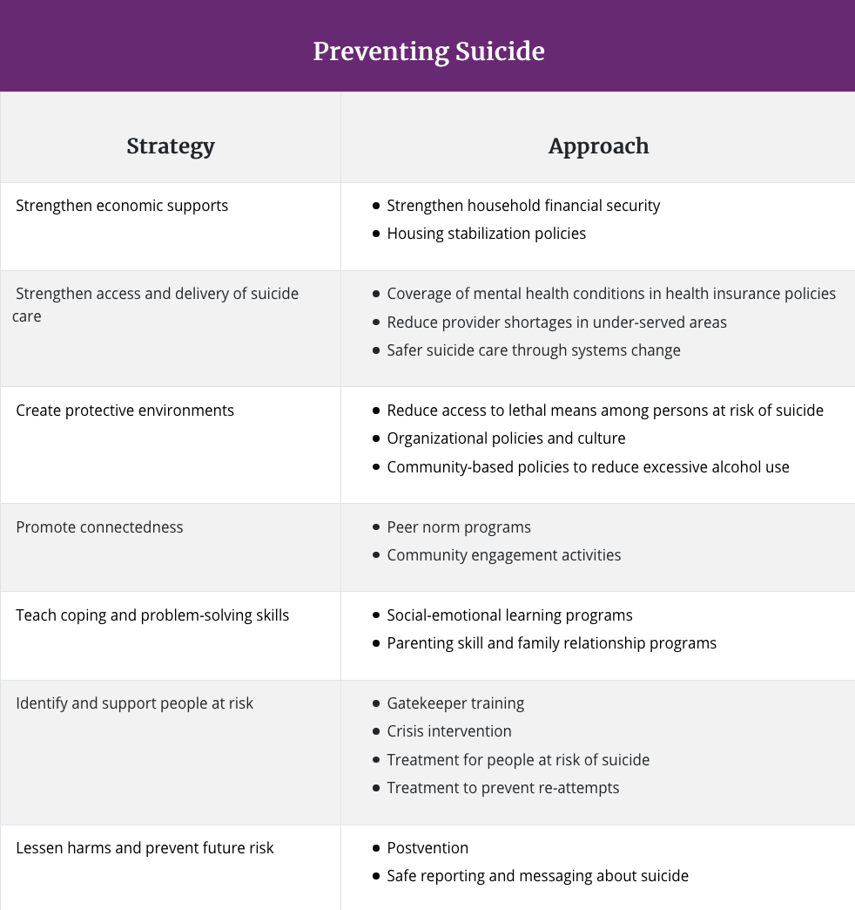

What is suicide?
What are some suicide prevention strategies?
 cr: Suicide Prevention Strategies- cdc.gov#BeThe1To 5 Action Steps
Follow these 5 steps if you know someone who may need help. These steps have been proven to help others find hope and support.
1. Ask
Research shows people who are having thoughts of suicide feel relief when someone asks after them in a caring way. Findings suggest acknowledging and talking about suicide may reduce suicidal ideation.
2. Keep Them Safe
A number of studies have indicated that when lethal means are made less available or less deadly, suicide rates by that method decline, and frequently suicide rates overall decline.
3. Be There
Individuals are more likely to feel less depressed, less suicidal, less overwhelmed, and more hopeful by after speaking to someone who listens without judgment.
4. Help Them Connect
Studies indicate that helping someone at risk create a network of resources and individuals for support and safety can help them take positive action and reduce feelings of hopelessness.
5. Follow Up
Studies have also shown that brief, low cost intervention and supportive, ongoing contact may be an important part of suicide prevention, especially for individuals after they have been discharged from hospitals or care services.
cr: Have the Conversation- suicidepreventionlifeline.org